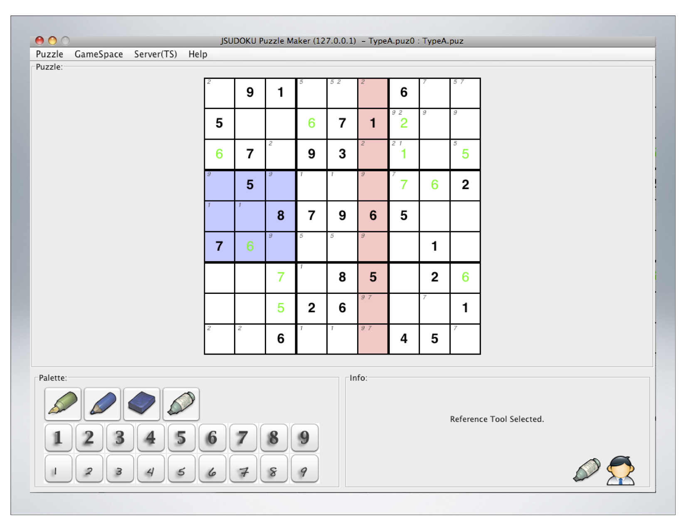

bio micro-coordination research lab teaching vita publication
Active_Research Dissertation_Research Past_Research Industry_Projects
- Active Research
Human Computer Interaction
Organization: C.H.I.L.D, Virginia State University
Social Media Data Analytics
Organization: C.H.I.L.D, Virginia State University
Machine Learning/Artificial Intelligence
Organization: C.H.I.L.D, Virginia State University
- Dissertation Research: Micro-Coordination
Small screen technology is permeating our daily lives and restructuring our face-to-face interactions.
Given the ubiquity of cell phones, portable gaming devices, MP3 players, and so forth, the situation of seeing the other person but not seeing what captures his or her attention is endemic.
These rapid advances in technology create an unprecedented need to study technology mediated coordination.
In my research, I focus on how visually segregated technologies impact, reformulate and reform coordinative interactions among co-located people, and study "Micro-Coordination." among co-located people.
Micro-Coordination lies in the minute details of how we carry out our daily moment-to-moment coordinative activities. It focuses on how people decide who goes next in interaction, what the duration of the action is, what other actions may happen concomitantly, and how people regulate regard and attention as well as understanding. In my research, I focus on describing phenomena in micro-coordination, and on exploring designs associated with human coordination in the small. By taking a phenomenologically-situated stance in investigating social interactions among co-located groups, and examining the emotional, personal, interpersonal and behavioral effects that technology design brings to bear on human interactions, I aim to explore various interactional problems regarding social agency, interpersonal attention, conflict, and establishing the moral order in technology mediated, triple interactional space. My research informs collaborative technology design by locating seams or failures of coordination, and by varying the design of mediating technologies to make the problems more apparent.
The Triple Space Interaction model signifies the essence of the new interactional possibilities that technology is bringing us. The triple space interaction model shows how technology opens up multiple ways to coordinate joint activities for co-located people, but it also hints at how the changes can estrange us from the everyday activities we used to take for granted. For instance Branham and Harrison describe an anecdotal account of a couple texting each other, instead of talking, while lying next to each other in the same bed. How strange is that? Yet, this is a legitimate way people interact with one another in the digitally augmented (or digitally fragmented) space. In "triple space," people must manage (1) complex problem-solving tasks, (2) social interaction, and (3) the meaning making process of the changing representation created by others on shared mediums.
In my dissertation research, I investigate co-located triads as they play a collaborative, problem-solving game using distributed technologies such as laptops and tablets. I compare and contrast different technology conditions to see how computer mediated interactions are similar and/or different from the traditional ones. As with much CSCW research, my research asks (1) whether and how the group discourse affects joint activities, and (2) whether and how differences in technology mediums affect joint activities.
However, my research is distinct from most previous CSCW research in that I investigate what has been more or less ignored in interaction studies: silence. Previous research reports a number of independent variables that affect group processes. Many empirical studies have explored group work on an interactional level, reporting various coordinative properties of joint activities. Yet much attention is given only to linguistic and paralinguistic features of interaction; most previous studies focus on examining what people say or do in interactions, and seldom look at what people do not say, or do not do. Silence has always been considered as background, or a void needing to be filled with interactions. My dissertation work is a study of silence and I explore how silence affects group processes.
Organization: Third.Lab, Virginia Tech
Methods: Controlled Experiment, Ethnomethodology, Micro-Ethnography, Behavioral Analysis, Conversational Analysis, Qualitative Analysis, Quantitative Analysis, Mixed-Methods
Software Development: Java, SWING, TupleSpace
Related Publication:
Micro-Coordination lies in the minute details of how we carry out our daily moment-to-moment coordinative activities. It focuses on how people decide who goes next in interaction, what the duration of the action is, what other actions may happen concomitantly, and how people regulate regard and attention as well as understanding. In my research, I focus on describing phenomena in micro-coordination, and on exploring designs associated with human coordination in the small. By taking a phenomenologically-situated stance in investigating social interactions among co-located groups, and examining the emotional, personal, interpersonal and behavioral effects that technology design brings to bear on human interactions, I aim to explore various interactional problems regarding social agency, interpersonal attention, conflict, and establishing the moral order in technology mediated, triple interactional space. My research informs collaborative technology design by locating seams or failures of coordination, and by varying the design of mediating technologies to make the problems more apparent.
The Triple Space Interaction model signifies the essence of the new interactional possibilities that technology is bringing us. The triple space interaction model shows how technology opens up multiple ways to coordinate joint activities for co-located people, but it also hints at how the changes can estrange us from the everyday activities we used to take for granted. For instance Branham and Harrison describe an anecdotal account of a couple texting each other, instead of talking, while lying next to each other in the same bed. How strange is that? Yet, this is a legitimate way people interact with one another in the digitally augmented (or digitally fragmented) space. In "triple space," people must manage (1) complex problem-solving tasks, (2) social interaction, and (3) the meaning making process of the changing representation created by others on shared mediums.
In my dissertation research, I investigate co-located triads as they play a collaborative, problem-solving game using distributed technologies such as laptops and tablets. I compare and contrast different technology conditions to see how computer mediated interactions are similar and/or different from the traditional ones. As with much CSCW research, my research asks (1) whether and how the group discourse affects joint activities, and (2) whether and how differences in technology mediums affect joint activities.
However, my research is distinct from most previous CSCW research in that I investigate what has been more or less ignored in interaction studies: silence. Previous research reports a number of independent variables that affect group processes. Many empirical studies have explored group work on an interactional level, reporting various coordinative properties of joint activities. Yet much attention is given only to linguistic and paralinguistic features of interaction; most previous studies focus on examining what people say or do in interactions, and seldom look at what people do not say, or do not do. Silence has always been considered as background, or a void needing to be filled with interactions. My dissertation work is a study of silence and I explore how silence affects group processes.
Organization: Third.Lab, Virginia Tech
Methods: Controlled Experiment, Ethnomethodology, Micro-Ethnography, Behavioral Analysis, Conversational Analysis, Qualitative Analysis, Quantitative Analysis, Mixed-Methods
Software Development: Java, SWING, TupleSpace
1. Lee, J.S. and Tatar, D.
"Good Enough" Pointing in Pervasive Computing,
In Proceedings of the Conference on the Collaboration Technologies and Systems, CHCI&ID (CTS 2012), Denver, Colorado, USA
Abstract: Opportunities are growing to engage in highly coordinated activities for multiple users with multiple screens. A great deal of research has explored how to support deictic reference in computer-mediated conversation, leading to what appears to be a general consensus among system builders in favor of a multi-mouse approach. While the multi-mouse provides an application-independent, context-free deictic reference solution, not only is it typically more costly to build, but also the usability of the tool regressively deteriorates as the number of users gets larger. Alternatives to the multi-mouse are application-specific, context-laden pointing mechanisms. Different research showed that the context-specific pointing conveys more information than a mere arrow. Yet, the context-free, multi-mouse pointing mechanism is generally taken as the panacean deixis solution in the groupware. Moreover, there have not been enough studies investigating tailorability or appropriatability of those different approaches. The needs for theories about when people profit from different kinds of support for pointing are current and large. We studied groups engaged in a highly coordinated, co-located task. We studied groups of three and used systems in which deictic reference could be achieved by a number of mechanisms. Our analysis shows that people chose pointing techniques that minimized the effort of communication; however, as the reference task became more complex, they employed more complex tools. Explicit support for pointing is desirable to support complex reference tasks, but not all pointing mechanisms match all cases. Different tools entail different deictic behaviors.
Abstract: Opportunities are growing to engage in highly coordinated activities for multiple users with multiple screens. A great deal of research has explored how to support deictic reference in computer-mediated conversation, leading to what appears to be a general consensus among system builders in favor of a multi-mouse approach. While the multi-mouse provides an application-independent, context-free deictic reference solution, not only is it typically more costly to build, but also the usability of the tool regressively deteriorates as the number of users gets larger. Alternatives to the multi-mouse are application-specific, context-laden pointing mechanisms. Different research showed that the context-specific pointing conveys more information than a mere arrow. Yet, the context-free, multi-mouse pointing mechanism is generally taken as the panacean deixis solution in the groupware. Moreover, there have not been enough studies investigating tailorability or appropriatability of those different approaches. The needs for theories about when people profit from different kinds of support for pointing are current and large. We studied groups engaged in a highly coordinated, co-located task. We studied groups of three and used systems in which deictic reference could be achieved by a number of mechanisms. Our analysis shows that people chose pointing techniques that minimized the effort of communication; however, as the reference task became more complex, they employed more complex tools. Explicit support for pointing is desirable to support complex reference tasks, but not all pointing mechanisms match all cases. Different tools entail different deictic behaviors.

2. Lee, J.S. , Tatar, D., and Harrison, S.
Micro-coordination: because we did not already learn everything we need to know about working with others in kindergarten,
In Proceedings of the Conference on Computer Supported Cooperative Work (CSCW '12), Seattle, WA, USA
Abstract: How is it that groups of people can complete joint tasks without the expected observable markers of "successful" coordination? The relationship between micro-level, situated actions and broader outcomes such as opportunities for learning is under-explored. We investigated co-located groups as they played a collaborative, problem-solving game using distributed technology on laptops. There was considerable variety in how groups accomplished the work. Some satisfied groups talked a lot but other satisfied groups did not. Talk was diagnostic of satisfaction but lack of talk was not diagnostic of dissatisfaction. In fact, groups that had little or no discourse differed considerably from one another. One kind of group completes the joint tasks very well without observable markers frequently associated with success. Others are less successful in the task goal but manage difficult interpersonal situations.
Abstract: How is it that groups of people can complete joint tasks without the expected observable markers of "successful" coordination? The relationship between micro-level, situated actions and broader outcomes such as opportunities for learning is under-explored. We investigated co-located groups as they played a collaborative, problem-solving game using distributed technology on laptops. There was considerable variety in how groups accomplished the work. Some satisfied groups talked a lot but other satisfied groups did not. Talk was diagnostic of satisfaction but lack of talk was not diagnostic of dissatisfaction. In fact, groups that had little or no discourse differed considerably from one another. One kind of group completes the joint tasks very well without observable markers frequently associated with success. Others are less successful in the task goal but manage difficult interpersonal situations.
3. Lee, J.S. , and Tatar, D.
Form Factor Matters,
In Proceedings of the Conference on Computer Supported Cooperative Work (CSCW '13), San Antonio, Texas, USA
Abstract: Previous research reports a number of different variables that affect group processes. We examine situations in "triple space", in which people must manage (1) complex problem-solving tasks, (2) social interaction, and (3) the meaning making process of the changing representation created by others on shared mediums. In this case, the complex problem-solving task is solving a shared Sudoku puzzle. Two finding follow from the current study. First, form-factor (Laptop, Tablet, Paper) plays a role in change in positive emotion and amount of talk during an interaction. Second, the relationship between positive emotion and amount of talk differs between paper problem solving and computer-supported collaborative problem solving. That is, people who talk more when collaborating on paper experience an increase in positive emotions, while people's change in positive emotion is at best more weakly related to their amount of talk on the laptop or tablet.
Abstract: Previous research reports a number of different variables that affect group processes. We examine situations in "triple space", in which people must manage (1) complex problem-solving tasks, (2) social interaction, and (3) the meaning making process of the changing representation created by others on shared mediums. In this case, the complex problem-solving task is solving a shared Sudoku puzzle. Two finding follow from the current study. First, form-factor (Laptop, Tablet, Paper) plays a role in change in positive emotion and amount of talk during an interaction. Second, the relationship between positive emotion and amount of talk differs between paper problem solving and computer-supported collaborative problem solving. That is, people who talk more when collaborating on paper experience an increase in positive emotions, while people's change in positive emotion is at best more weakly related to their amount of talk on the laptop or tablet.
4. Lee, J.S. , and Tatar, D. Sounds of Silence: Exploring Contributions to Conversa- tions, Non-Responses and the Impact of Mediating Technologies in Triple Space,
In Proceedings of the Conference on Computer Supported Cooperative Work (CSCW '14), Baltimore, Maryland, USA
Abstract: We investigate collocated triads as they play a collaborative, problem-solving game using distributed technology on laptops. We examine how different triads attain and maintain mutual understanding in triple-space--when working on a hard problem, with communicating technologies and face-to-face interaction. We present qualitative and quantitative evidence that demonstrates the descriptive adequacy of a model of triadic interaction in triple space. We use that model to argue that the notion of good-enoughness is not a group attribute, but rather tied to each dyadic pair. This intellectual framework allows us to examine how non- response operates within these triple-space interactions when interaction is supported by different media. The results related to non-response raise the possibility that different media may result in subtle influence on the balance of participant goals.
Abstract: We investigate collocated triads as they play a collaborative, problem-solving game using distributed technology on laptops. We examine how different triads attain and maintain mutual understanding in triple-space--when working on a hard problem, with communicating technologies and face-to-face interaction. We present qualitative and quantitative evidence that demonstrates the descriptive adequacy of a model of triadic interaction in triple space. We use that model to argue that the notion of good-enoughness is not a group attribute, but rather tied to each dyadic pair. This intellectual framework allows us to examine how non- response operates within these triple-space interactions when interaction is supported by different media. The results related to non-response raise the possibility that different media may result in subtle influence on the balance of participant goals.
Time, Topic and Trawl
Conducted a field study with 11 participants. The study involved interviewing 11 participants twice a week for 8 weeks at participants' homes or workplaces, and analyzing the interview data.This work was done at Google during the summer 2010.
Organization: Third.Lab, Virginia Tech & Google Research
Methods: Interview, Contextual inquiry, Ethnography
1.
Abstract: Legacy web tools attempt to build on information that uses have when they originally conduct web research. In contrast, we examine the information that they have at the time when they attempt to recreate their past. We interviewed 11 non-expert users twice a week for eight weeks in their own physical and computational environments. We used both Google web histories and the prototype Research Trails system as prompts to probe how the participants viewed their past web experiences and how they reconstructed them. The Research Trails system lets users utilize information about both time and topic to help themselves remember and resume everyday research tasks. Based on these observations, a model of users' perceived past web activities informed the iterative refinement of the Research Trails system. The user may see a past action as belonging to multiple categories at the same time or as in different categories at different times.
Gaming Club
Conducted an observational study at a local middle school investigating how students coordinate behaviors in a game-club context.Organization: Third.Lab, Virginia Tech
Methods: Observational Study, Ethnography, Design-Ethnography
Site: Local middle school
1.
Abstract: Technologies increasingly inhabit evermore mundane and personal settings, a fact that has caused some designers to reflect upon the emergent, inaccessible nature of context. We present the notion of processlessness as a design value. The examples given here are intended to provoke thought about current design priorities and practices, and spur de-sign discourse regarding the issue of context. Two cases illustrate how the absence of process in mediating artifacts can make room for users to discover, construct, and reconfigure context through and around their technologies. This argument is related to the notion of Zensign, that what we omit from technology designs is as important as what we put in; by adding features to computational systems, designers might be removing interactional possibilities.
Play Games with Others: Exploring pedagogical, technology-augmented interaction
Developed three TupleSpace based multi-player games. (Team Sudoku, Collaborative Crossword, ESL Password)Deployed the systems and conducted an observational study at English Language Institute (ELI) of Virginia Tech. (ESL Password)
Deployed the systems at Women in Computing Day (WCD) events. (ESL Password)
Held a demo session at Kid's Tech University (KTU) Hands-On Exhibits. (Collaborative Crossword)
Organization: Third.Lab, Virginia Tech
Methods: Observational Study, Ethnography, Design-Ethnography
Software Development: Java, TupleSpace, SWT, Swing, J2ME (handheld - Windows CE)
Site: ELI of VT, WCD, KTU
1. Tatar, D.,
Abstract: From a design point of view, coordination is radically under-theorized and under-explored. Arguably, playground games are the universal, cross-cultural venue in which people learn about and explore coordination between one another, and between the worlds of articulated rules and the worlds of experience and action. They can therefore (1) teach us about the processes inherent in human coordination, (2) provide a model of desirable coordinative possibilities, and (3) act as a design framework from which to explore the relationship between game and game play--or, to put it in terms of an inherent tension in human-computer interaction, between plans and situated actions. When brought together with a computer language for coordination that helps us pare down coordinative complexity to essential components, we can create systems that have highly distributed control structures. In this paper, we present the design of four such student-created collaborative, distributed, interactive systems for face-to-face use. These take their inspiration from playground games with respect to who can play (plurality), how (appropriability) and to what ends (acompetitiveness). As it happens, our sample systems are themselves games; however, taking playground games as our model helps us create systems that support game play featuring not enforcement of plans but emergence of rules, roles, and turn taking.
2. Tatar, D., Lin, S. and
Micro-Coordination: Couple Arguing & Attention Study
Assisted in planning and designing two user studies.Organization: Third.Lab, Virginia Tech
Methods: Controlled Experiment, Ethnomethodologically informed Micro-Ethnography, Qualitative Analysis
Vivid Embodiment (Placemark & ThoughtSwap)
Assisted in developing software, running tests, and conducting a multi-institutional study of collaborative writing tools.Organization: Third.Lab, Virginia Tech & English Department, Hollins University
Methods: Classroom Observation, Ethnography
Software Development: Java, SWING, TupleSpace
Site: Hollins University
1. Schaefer, M.R.(2009) On PlaceMark: Collaborative Authoring, Place, and Identity, Master's Thesis, Virginia Tech
VTPL (Vehicle Terrain Performance Laboratory)
Supported Vehicle Terrain Performance Laboratory (VTPL) to establish an enhanced data acquisition work process by evaluating existing process and providing automated work process solutions.Provided an improved data analysis solution to VTPL by developing C modules that replaced time consuming MATLAB codes.
Developed MATLAB process manager that could handle multiple MATLAB processes dynamically in parallel.
School: Vehicle Terrain Performance Laboratory, Virginia Tech
Language: C, Matlab
COKO-KOLA
Developed an original version of the "COKO Compiler" for Sparcstations (Solaris) using Yacc and Lex, together with C++ and Prolog.The COKO compiler translates COKO transformations into C++ classes that can be subsequently compiled into executables that transform KOLA trees.
Further information on the project can be found here.
Organization: Brown Univ.
Language: C/C+, Lex/Yacc, Prolog
{kind=link}
W-TCP
Research work on various networking protocols including ITCP, WTCP, SNOOP, SOCKS, TTCP, SACK, IPSEC, IP Relay and ECN. The work involved implementation of protocols, modification of Linux network kernel, field testing different protocols for mobile use, and the optimization of TCP/IP protocols for wireless communication services.Two commercial wireless network accelerator products were developed after a year of research. The final products included network accelerators and software add-on packages for Windows CE and mobile Linux based handheld devices. Network accelerators were deployed in SK Telecom network.
I was in charge of the initial research work, and both managerial and engineering work for commercializing the products.
Company: Telecommunication R&D Center, SK C&C
Language: C
Platform: Linux (Accelerator), WindowsCE (handheld), Mobile Linux (handheld)
{kind=link}
LBS (Location Based Service)
Designed and developed database system for global positioning system (GPS). Oracle and a memory database were used to develop the system. The final product is commercially available at SK Telecom, Korea (Platform - UNIX System)Company: Telecommunication R&D Center, SK C&C
Language: C/C++
DBMS: Altibase, Oracle Platform: Linux
{kind=link}
MiME
Designed and developed laser marker controlling software. The final products were installed in various semi-conductor producing companies including Samsung, Hynix, Amkor, Texas Instruments, AMD, Cypress, ASE, Lucent Technologies, National Semiconductor, and Toshiba.Designed and developed remote control laser marking software. The final product was exhibited at the Semi-Singapore 1999.
Company: R&D Center, EO Technics Co., Ltd.
Language: C++
Tools: Visual Studio 6
Platform: Windows 2000, Windows NT, Windows XP
{kind=link}
SECS/HSMS/GEM
Designed and developed factory automation processing units using SECS/HSMS/GEM.Developed SEMI SECS/HSMS/GEM libraries for multiple EO Laser Systems.
Company: R&D Center, EO Technics Co., Ltd.
Language: C++
Tools: Visual Studio 6
Platform: Windows 2000, Windows NT, Windows XP